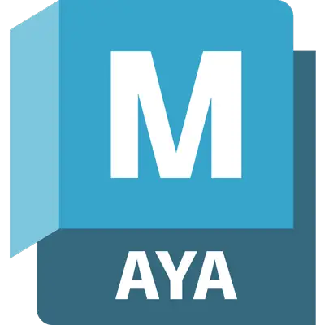
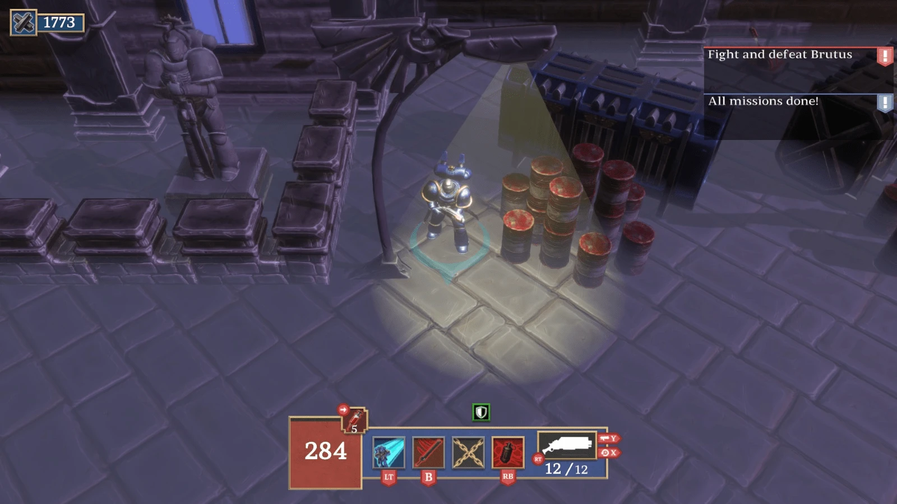
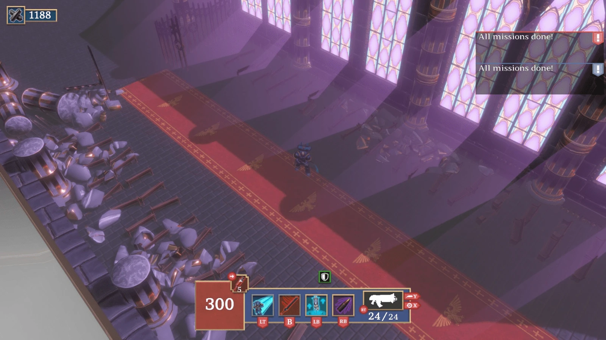
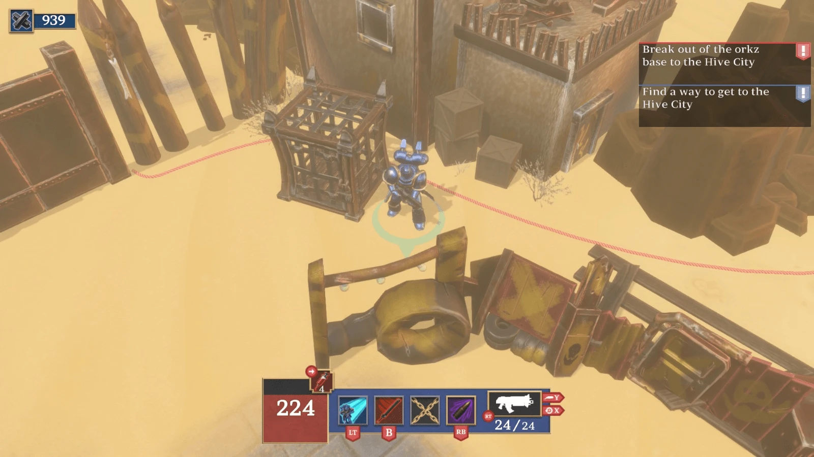

Description
On this project, I contributed in multiple areas, including enemy and prop concept development, tank asset production, environment prop modeling and visual polish during the final development phase.
My initial focus was on exploring visual ideas for enemy types, particulary a ranged and tank class unit and it's weaponry. Once the concept was finalized, I was responsible for modeling a detailed enemy tank, taking it through each production stage, from early blockouts to final textures.
Later, I moved into environment work, where I created various props used throughout the map. This required quickly adapting to the team's existing pipeline and collaborating closely with other artists to maintain visual consistency across levels. I also focused on additional concept work for various in-game props.
Toward the end of development, I assisted with visual effects and helped refine the maps by adjusting some asset placement.
We used our own engine.
Burned Games



